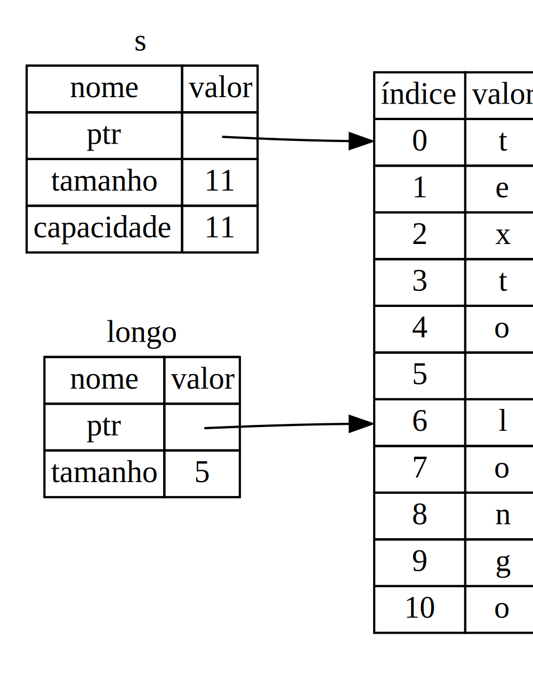

Slices
Outro tipo de dados em que não há ownership é a slice (do inglês, fatia). Slices lhe permitem referenciar uma sequência contígua de elementos em uma coleção em vez de referenciar a coleção inteira.
Aqui está um pequeno problema de programação: escrever uma função que pega uma string e retorna a primeira palavra que encontrar dentro dela. Se a função não encontrar um espaço na string, significa que a string inteira é uma palavra só, então a string toda deve ser retornada.
Vamos pensar sobre a assinatura desta função:
fn primeira_palavra(s: &String) -> ?
Esta função, primeira_palavra, tem uma &String como parâmetro. Nós não
queremos tomar posse dela, então tudo bem. Mas o que nós deveríamos retornar?
Não temos uma forma de falar sobre parte de uma string. No entanto, poderíamos
retornar o índice do final de uma palavra. Vamos tentar fazer isso, conforme
mostrado na Listagem 4-5:
Arquivo: src/main.rs
# #![allow(unused_variables)] #fn main() { fn primeira_palavra(s: &String) -> usize { let bytes = s.as_bytes(); for (i, &item) in bytes.iter().enumerate() { if item == b' ' { return i; } } s.len() } #}
Listagem 4-5: A função primeira_palavra, que retorna um
índice para um byte da String passada como parâmetro.
Vamos dividir este código em algumas partes. Como precisamos varrer a String
elemento por elemento, e verificar se algum valor é um espaço, vamos converter
nossa String em um array de bytes usando o método as_bytes:
let bytes = s.as_bytes();
Depois, criamos um iterador sobre o array de bytes usando o método iter:
for (i, &item) in bytes.iter().enumerate() {
Vamos discutir sobre iteradores em mais detalhes no Capítulo 13. Por enquanto,
saiba que iter é um método que retorna cada elemento em uma coleção, e
enumerate encapsula o resultado do iter e retorna cada elemento como parte
de uma tupla. O primeiro elemento da tupla é o índice, e o segundo elemento é
uma referência ao valor. Isto é um pouco mais conveniente do que calcular o
índice nós mesmos.
Como o método enumerate retorna uma tupla, podemos usar padrões para
desestruturar esta tupla, assim como qualquer outra coisa em Rust. Então, no
for, especificamos um padrão que tem i para o índice na tupla e &item para
o byte. Como pegamos uma referência ao elemento através do
.iter().enumerate(), usamos um & neste padrão.
Nós procuramos o byte que representa um espaço usando a sintaxe de byte literal.
Se encontrarmos um espaço, retornamos a posição dele. Caso contrário, retornamos
o tamanho da string usando s.len():
if item == b' ' {
return i;
}
}
s.len()
Agora temos uma forma de descobrir o índice do fim da primeira palavra na
string, mas tem um problema. Estamos retornando um usize por si só, mas ele só
possui um significado no contexto da &String. Em outras palavras, como é um
valor separado da String, não há garantia de que ele ainda será válido no
futuro. Considere o programa na Listagem 4-6, que usa a função da Listagem 4-5:
Arquivo: src/main.rs
# fn primeira_palavra(s: &String) -> usize { # let bytes = s.as_bytes(); # # for (i, &item) in bytes.iter().enumerate() { # if item == b' ' { # return i; # } # } # # s.len() # } # fn main() { let mut s = String::from("texto longo"); let palavra = primeira_palavra(&s); // palavra vai ter o valor 5. s.clear(); // Isso esvazia a String, deixando ela igual a "". // palavra ainda tem o valor 5 aqui, mas já não há mais uma string para a // qual o valor 5 faça algum sentido. palavra agora é totalmente inválida! }
Listagem 4-6: Armazenando o resultado de uma chamada à
função primeira_palavra, e depois, mudando o conteúdo da String.
Este programa compila sem erros, e também o faria se usássemos a variável
palavra depois de chamar s.clear(). palavra não está conectada ao estado
de s de nenhuma forma, então, palavra ainda contém o valor 5. Poderíamos
usar esse valor 5 com a variável s para tentar extrair a primeira palavra da
string, mas isso seria um bug, pois o conteúdo de s já mudou após termos salvo
o valor 5 na variável word.
Ter que se preocupar sobre o índice da palavra ficar fora de sincronia com os
dados em s é tedioso e propenso a erros! Gerenciar esses índices é ainda mais
delicado se escrevermos uma função segunda_palavra. Sua assinatura teria que
ser algo do tipo:
fn segunda_palavra(s: &String) -> (usize, usize) {
Agora estamos rastreando os índices do início e do final, e temos ainda mais valores que são calculados a partir dos dados em um estado particular, mas que não estão vinculados a este estado de nenhuma forma. Agora temos três variáveis não relacionadas flutuando que precisam ser mantidas em sincronia.
Felizmente, Rust possui uma solução para este problema: slices de string.
Slices de String
Uma slice de string é uma referência para uma parte de uma String, e tem a
seguinte forma:
# #![allow(unused_variables)] #fn main() { let s = String::from("texto longo"); let texto = &s[0..5]; let longo = &s[6..11]; #}
Isto é similar a pegar uma referência à String inteira, mas com um [0..5] a
mais. Em vez de uma referência à String inteira, trata-se de uma referência a
uma porção da String. A sintaxe início..fim representa um range
(uma faixa) que começa em início e continua até, mas não incluindo, fim.
Podemos criar slices usando um range entre colchetes especificando
[índice_inicial..índice_final], em que índice_inicial é a primeira posição
inclusa na slice, e índice_final é um a mais que a última posição inclusa na
slice. Internamente, a estrutura de dados de uma slice armazena a posição
inicial e o tamanho da slice, que corresponde a índice_final menos
índice_inicial. Então, no caso do let longo = &s[6..11];, longo seria uma
slice que contém um ponteiro para o sétimo byte de s (índice 6) e um tamanho
igual a 5.
A Figura 4-6 mostra isto em um diagrama.

Figura 4-6: Slice referente a uma parte de uma
String
Com a sintaxe de range do Rust (..), se você quiser começar com o primeiro
elemento (índice zero), você pode omitir o valor antes dos dois pontos. Em
outras palavras, estas formas são equivalentes:
# #![allow(unused_variables)] #fn main() { let s = String::from("texto"); let slice = &s[0..2]; let slice = &s[..2]; #}
Da mesma forma, se a sua slice inclui o último byte da String, você pode
omitir o último número. Isso significa que as seguintes formas são equivalentes:
# #![allow(unused_variables)] #fn main() { let s = String::from("texto"); let tamanho = s.len(); let slice = &s[3..tamanho]; let slice = &s[3..]; #}
Você também pode omitir ambos os valores para pegar uma slice da string inteira. Logo, essas duas formas são equivalentes:
# #![allow(unused_variables)] #fn main() { let s = String::from("texto"); let tamanho = s.len(); let slice = &s[0..tamanho]; let slice = &s[..]; #}
Nota: Os índices do range de uma slice de string devem coincidir com os limites entre caracteres UTF-8 válidos. Se você tentar criar uma slice de string no meio de um caractere que tenha mais de um byte, seu programa vai terminar com erro. Para introduzir slices de string, estamos utilizando apenas caracteres ASCII nesta seção; uma discussão mais detalhada sobre manipulação de caracteres UTF-8 será feita na seção "Strings" do Capítulo 8.
Com toda essa informação em mente, vamos reescrever a função primeira_palavra
para retornar uma slice. O tipo que representa "slice de string" é escrito como
&str:
Arquivo: src/main.rs
# #![allow(unused_variables)] #fn main() { fn primeira_palavra(s: &String) -> &str { let bytes = s.as_bytes(); for (i, &item) in bytes.iter().enumerate() { if item == b' ' { return &s[0..i]; } } &s[..] } #}
Pegamos o índice para o fim da palavra da mesma forma como fizemos na Listagem 4-5, buscando a primeira ocorrência de um espaço. Quando o encontramos, retornamos uma slice de string usando o início da string e o índice do espaço como índices inicial e final, respectivamente.
Agora, quando chamamos primeira_palavra, pegamos de volta um único valor que
está vinculado à string. O valor é composto de uma referência para o ponto
inicial da slice e o número de elementos que ela contém.
Retornar uma slice também funcionaria para uma função segunda_palavra:
fn segunda_palavra(s: &String) -> &str {
Agora, temos uma API bem direta que é bem mais difícil de bagunçar, uma vez que
o compilador vai se certificar que as referências dentro da String
permanecerão válidas. Lembra do bug do programa na Listagem 4-6, quando
obtivemos o índice para o fim da primeira palavra mas depois limpamos a string,
invalidando o índice obtido? Aquele código era logicamente incorreto, mas não
mostrava nenhum erro imediato. Os problemas apareceriam mais tarde quando
tentássemos usar o índice da primeira palavra com uma string que foi esvaziada.
Slices tornam esse bug impossível de acontecer e nos permitem saber que temos um
problema no código muito mais cedo. Na versão usando slice, a função
primeira_palavra vai lançar um erro em tempo de compilação:
Arquivo: src/main.rs
fn main() {
let mut s = String::from("texto longo");
let palavra = first_word(&s);
s.clear(); // Erro!
}
Aqui está o erro:
error[E0502]: cannot borrow `s` as mutable because it is also borrowed as immutable
--> src/main.rs:6:5
|
4 | let word = primeira_palavra(&s);
| - immutable borrow occurs here
5 |
6 | s.clear(); // Erro!
| ^ mutable borrow occurs here
7 | }
| - immutable borrow ends here
Voltando às regras de borrowing, lembre-se que, se temos uma referência imutável
para algum valor, não podemos também obter uma referência mutável do mesmo. Como
clear precisa truncar a String, esse método tenta obter uma referência
mutável, e acaba falhando. O Rust não só tornou nossa API mais fácil de usar,
como também eliminou uma classe inteira de erros em tempo de compilação!
Strings Literais São Slices
Lembre-se de que falamos sobre strings literais serem armazenadas dentro do binário. Agora que conhecemos slices, podemos entender strings literais adequadamente:
# #![allow(unused_variables)] #fn main() { let s = "Olá, mundo!"; #}
O tipo de s aqui é &str: é uma slice apontando para aquele ponto específico
do binário. Também é por isso que strings literais são imutáveis; &str é uma
referência imutável.
Slices de Strings como Parâmetros
Saber que você pode obter slices de literais e Strings nos levam a mais um
aprimoramento da função primeira_palavra, e aqui está sua assinatura:
fn primeira_palavra(s: &String) -> &str {
Um Rustáceo mais experiente escreveria esta função conforme a seguir, permitindo
utilizar a mesma função com Strings e &strs:
fn primeira_palavra(s: &str) -> &str {
Se temos uma slice de string, podemos passá-la diretamente. Se temos uma
String, podemos passar uma slice da String inteira. Definir uma função que
recebe uma slice em vez de uma referência para uma String deixa nossa API mais
genérica e útil sem perder nenhuma funcionalidade:
Arquivo: src/main.rs
# fn primeira_palavra(s: &str) -> &str { # let bytes = s.as_bytes(); # # for (i, &item) in bytes.iter().enumerate() { # if item == b' ' { # return &s[0..i]; # } # } # # &s[..] # } fn main() { let minha_string = String::from("texto longo"); // primeira_palavra funciona com slices de `String`s let palavra = primeira_palavra(&minha_string[..]); let minha_string_literal = "texto longo"; // primeira_palavra funciona com strings literais let palavra = primeira_palavra(&minha_string_literal[..]); // uma vez que strings literais *são* slices de strings, // isso também funciona, sem nem usar sintaxe de slice! let palavra = primeira_palavra(minha_string_literal); }
Outras Slices
Slices de string, como você pode imaginar, são específicas de strings. Mas há também um tipo de slice mais genérico. Considere esta array:
# #![allow(unused_variables)] #fn main() { let a = [1, 2, 3, 4, 5]; #}
Assim como às vezes queremos nos referir a uma parte de uma string, podemos também querer nos referir a uma parte de uma array, e faríamos isso da seguinte forma:
# #![allow(unused_variables)] #fn main() { let a = [1, 2, 3, 4, 5]; let slice = &a[1..3]; #}
Essa slice tem o tipo &[i32]. Ela funciona da mesma forma que as slices de
string, armazenando uma referência para o primeiro elemento e um tamanho. Você
vai usar esse tipo de slice para todos os tipos de coleções. Vamos discutir
essas coleções em mais detalhe quando falarmos sobre vetores no Capítulo 8.
Resumo
Os conceitos de ownership, borrowing, e slices são o que garante a segurança de memória dos programas em Rust em tempo de compilação. A linguagem Rust lhe dá controle sobre o uso da memória, assim como outras linguagens de programação de sistemas, mas como o dono dos dados limpa automaticamente a memória quando ele sai de escopo, você não tem que escrever e debugar código extra para ter esse controle.
O ownership afeta o funcionamento de várias outras partes do Rust, por isso
vamos falar um pouco mais sobre esses conceitos neste livro daqui para a frente.
Vamos seguir para o próximo capítulo e ver como agrupar dados em uma struct.